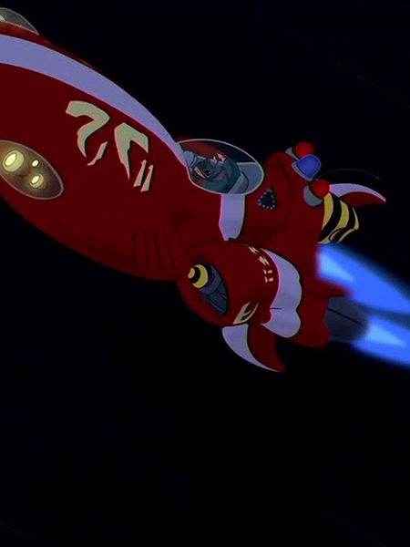

Aloha! Vous vous êtes déjà demandé comment un petit monstre bleu est devenu membre d'une famille hawaïenne? C'est une histoire plutôt folle, et je vais tout vous raconter! 🚀
Création dans le Laboratoire
Je suis né dans le laboratoire du Dr. Jumba Jookiba, un scientifique génial mais un peu fou. Il m'a créé comme l'Expérience 626, programmé pour être le plus avancé des êtres génétiquement modifiés. J'étais censé être indestructible, super intelligent, et... un peu destructeur. 😅
Le saviez-vous? 🤓
Je peux soulever 3000 fois mon poids et mon cerveau peut traiter les informations plus rapidement qu'un superordinateur!
L'Évasion et l'Arrivée sur Terre
Après ma création, j'ai décidé de faire un petit tour dans la galaxie (ok, je me suis échappé 🙈). Mon vaisseau s'est écrasé sur une petite île appelée Hawaï. C'est là que tout a changé...
Rencontre avec Lilo
Au début, je me faisais passer pour un chien dans un refuge. C'est là que j'ai rencontré Lilo. Elle cherchait un ami, et moi... je cherchais juste à éviter la capture! Mais cette petite humaine a vu quelque chose en moi que personne d'autre n'avait vu.
"Ohana signifie famille, et famille signifie que personne ne doit être abandonné ni oublié."
Apprendre à Aimer
Petit à petit, j'ai appris ce qu'était l'amour, l'amitié, et la famille. Lilo m'a montré que je pouvais être plus que ce pour quoi j'avais été programmé. Elle m'a appris à surfer, à apprécier Elvis Presley, et surtout, à faire partie d'une ohana.